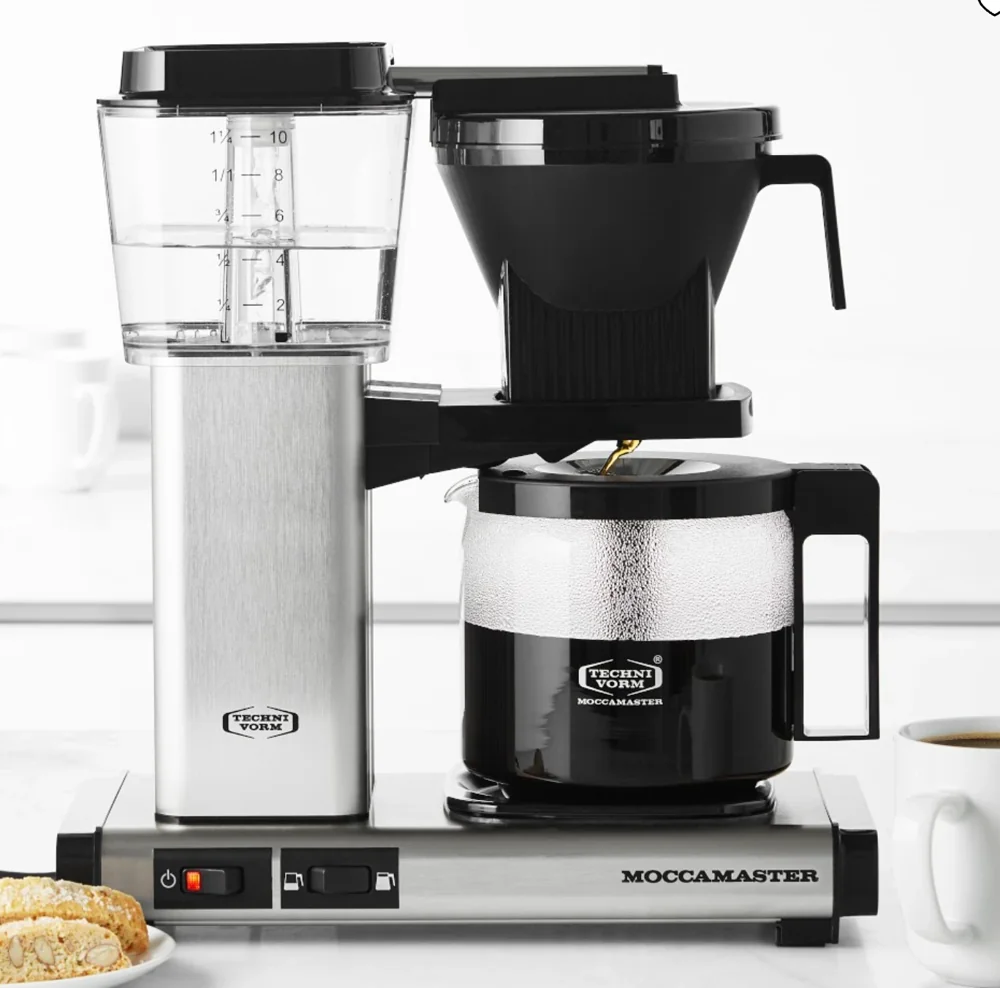
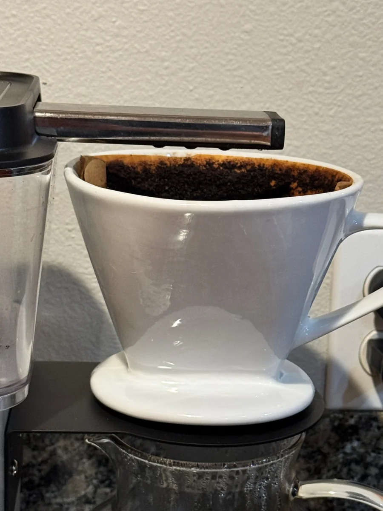
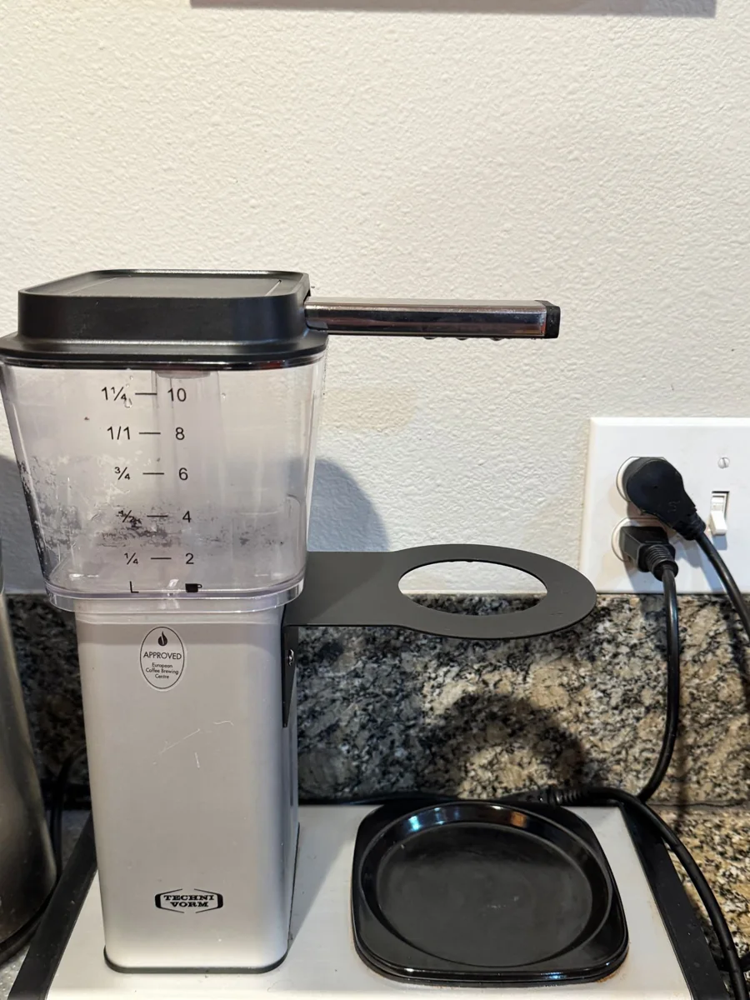
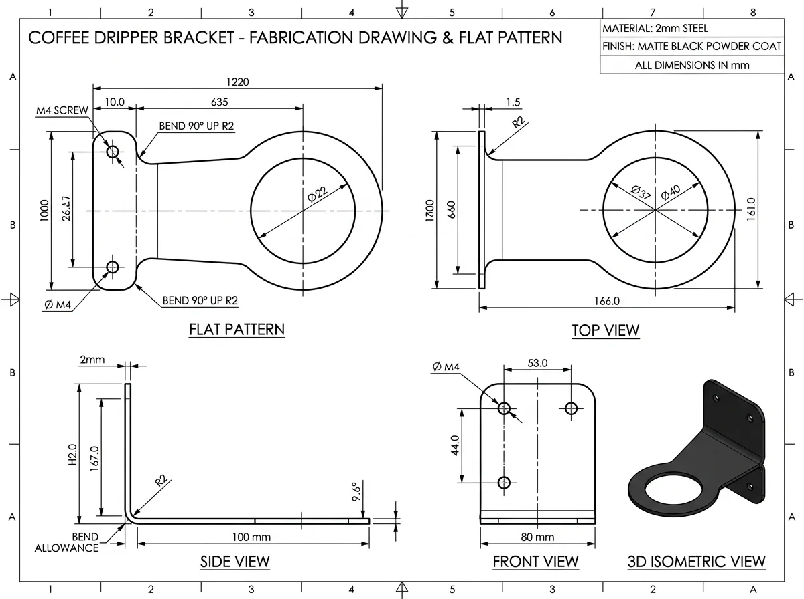

Moccamaster is an iconic coffee machine, however it uses a plastic bracket/drip-through insert and a plastic-topped carafe. I was curious to know if I could make the coffee maker totally plastic free using a metal bracket and a glass, ceramic, or stainless steel dripper cone + glass carafe.
I used an LLM to plot a requirements document and dimensions of a bracket with appropriate measurements, fired it away to SendCutSend, and it worked beautifully.

The requirements document

1. Overview & objective
Product name
Technivorm Moccamaster Hario V60 Sheet-Metal Dripper Bracket
Purpose
The objective of this project is to manufacture a custom, precision laser-cut and CNC press-brake bent sheet-metal replacement bracket. The component mounts directly to the vertical tower of a Technivorm Moccamaster coffee brewer, securely supporting a Hario V60 pour-over dripper (via a custom cork adapter ring or bare cone cutout) precisely centered beneath the OEM 9-hole water outlet spray arm.
Target manufacturing partner
SendCutSend (utilizing rapid sheet-metal fabrication capabilities including 2D laser cutting, CNC press-brake bending, automated edge deburring, and protective powder coating).
2. User & functional requirements
Direct OEM mounting compatibility
The bracket must serve as a direct plug-and-play replacement for the stock plastic Moccamaster brew-basket arm. It must interface seamlessly with the existing OEM M4 / T20 Torx mounting points located on the vertical aluminum column. Installation must require zero permanent modifications, drilling, or cutting of the host brewer frame.
Cross-generation fitment
To accommodate historical manufacturing variations in Technivorm column structures across serial number ranges (specifically legacy 0000–2206 series versus modern 2207+ series), the mounting interface must incorporate horizontal clearance slots or expanded hole tolerances. Screw center-to-center distances typically range from 32 mm to 38 mm.
Dripper alignment & stability
The bracket geometry must align the central vertical axis of a Hario V60 (size 02 or 03) directly under the primary water outlet spray head (82 mm – 88 mm offset from the column face). The mounting structure must remain rigid without cantilever deflection, maintaining a level plane under a fully saturated 30 g paper filter and 500 g water load to guarantee even bed extraction.
Thermal & moisture durability
Operating environments involve continuous direct steam, condensate, and hot coffee splashes ranging from 195°F to 205°F (91°C to 96°C). Materials and surface treatments must resist chemical corrosion, delamination, thermal warping, and oxidation over long-term exposure cycles.
Aesthetic integration
The finished component must complement the high-end industrial finish of the host brewer, utilizing a textured matte-black powder-coat finish matching the factory Moccamaster structural trims.
3. Mechanical & dimensional specifications
| Feature | Target dimension | Tolerance / notes |
|---|---|---|
| Overall width (X) | 96 – 100 mm | Matches vertical column width |
| Horizontal arm reach (Y) | 125 – 135 mm | Positions front edge cleanly forward |
| Ring center offset | 82 – 88 mm | From back wall; aligns V60 center under 9-hole spray arm |
| Center cutout diameter | 62 – 65 mm / 54 mm | 62–65 mm with cork adapter ring; 54 mm for bare glass V60 cone with silicone trim |
| Ring outer diameter | 96 – 100 mm | Provides 16 – 18 mm structural rim width |
| Vertical mounting flange | 25 mm H × 76 mm W | Satisfies SendCutSend minimum press-brake flange rule |
| Mounting holes | 2× Ø 4.5 mm | Clearance holes (or 4.5 × 6.5 mm horizontal slots for ±1 mm adjustment) |
| Hole center-to-center spacing | 35.0 mm nominal | 32 – 38 mm range; verify per unit |
| Hole distance from bend line | ≥ 12.0 mm | 13.0 mm nominal from inner bend line; prevents ovalization during bending |
| Bend angle & inside radius | 90° single bend | Single press-brake bend (R 2.0 mm typical) |
| Edge & corner fillets | R 3.0 – R 6.0 mm | Eliminates sharp external corners |
4. Material, manufacturing & DFM requirements
Primary material
0.080″ (2.0 mm) 5052-H32 aluminum. Highly corrosion-resistant and non-rusting in high-steam environments, offering clean press-brake formability without cracking and serving as an ideal substrate for powder coating.
Alternative material
0.074″ (14 gauge / 1.9 mm) 304 stainless steel for higher rigidity with a raw brushed or tumbled finish.
SendCutSend DFM rules
- Maintain minimum flange height ≥ 22 mm (25 mm specified) past the bend line so the press-brake die engages cleanly.
- Keep mounting hole edges at least 2.5× material thickness away from the bend line (13 mm center distance specified) to prevent hole deformation.
- Export flat pattern in 1:1 scale millimeter .DXF format with bend deduction (~1.6 mm for 2.0 mm 5052 aluminum) accounted for.
Post-processing & finish
Linear/tumbling deburring followed by matte black powder coat (matching OEM Moccamaster housing).
5. Reference parametric CAD specification (OpenSCAD)
The geometry is governed by key parametric variables: hole_spacing (35.0 mm), center_offset (85.0 mm), cutout_dia (63.0 mm), ring_od (98.0 mm), neck_width (76.0 mm), flange_height (25.0 mm), hole_dia (4.5 mm), and bend_deduction (1.6 mm). Below is the production script block for DXF flat-pattern export:
// Parametric Sheet-Metal Bracket for Moccamaster to Hario V60
thickness = 2.0; // Material thickness (5052-H32 Aluminum)
hole_spacing = 35.0; // T20 Torx screw center-to-center distance
center_offset = 85.0; // Column face to V60 center offset
cutout_dia = 63.0; // Ring inner cutout diameter
ring_od = 98.0; // Outer ring diameter
neck_width = 76.0; // Mounting flange width
flange_height = 25.0; // Vertical bend flange height
hole_dia = 4.5; // M4 clearance hole diameter
bend_deduction = 1.6; // SendCutSend 90-deg BD for 2.0mm Al
module flat_pattern() {
difference() {
union() {
// Vertical Flange Pattern
square([neck_width, flange_height - (bend_deduction/2)], center=true);
// Horizontal Arm Base
translate([0, (center_offset/2) + (flange_height/2)])
square([neck_width, center_offset], center=true);
// Outer Dripper Ring
translate([0, center_offset + (flange_height/2)])
circle(d=ring_od, $fn=120);
}
// Dripper Center Cutout
translate([0, center_offset + (flange_height/2)])
circle(d=cutout_dia, $fn=120);
// Mounting Holes
translate([-hole_spacing/2, 0]) circle(d=hole_dia, $fn=60);
translate([hole_spacing/2, 0]) circle(d=hole_dia, $fn=60);
}
}
flat_pattern();6. Verification & acceptance criteria
- Pre-production check: verify T20 Torx screw center-to-center distance and vertical clearance on the target Moccamaster unit prior to DXF export.
- Dimensional inspection: ensure post-bend angle is within 90° ± 1° and mounting holes are undistorted, accepting M4 screws freely.
- Functional fit test: confirm bracket mounts flush against vertical column, Hario V60 sits level in cutout (with cork ring or silicone trim), and the 9-hole outlet arm discharges water centrally into the V60 filter cone with full carafe clearance underneath.